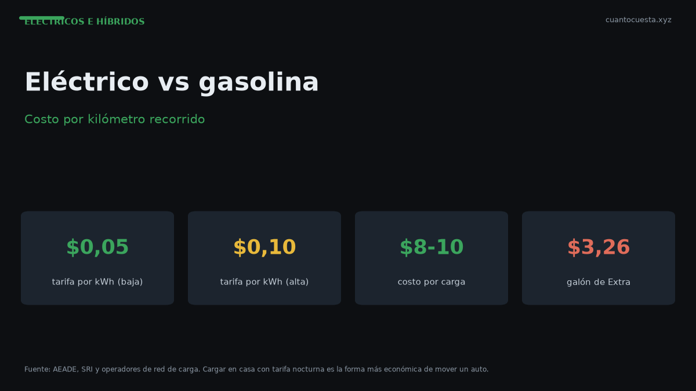

Costo por kilómetro: eléctrico vs gasolina en Ecuador (cálculo real)
Cargar un eléctrico cuesta $8 a $10 y la gasolina $3,21 el galón. Cuánto cuesta cada kilómetro con escenarios de 10.000, 15.000 y 20.000 km al año.

Un carro eléctrico cuesta entre $0,020 y $0,029 por kilómetro en Ecuador. Un carro a gasolina, entre $0,048 y $0,072. En la práctica, mover un eléctrico cuesta entre 2 y 3 veces menos por kilómetro.
Esa es la conclusión. Lo que sigue es de dónde sale, con los supuestos sobre la mesa, porque el resultado depende de tres variables: cuánto gastas en "cargar", cuántos kilómetros rinde de verdad y qué consumo tiene el auto de combustión con el que comparas.
Transparencia total: el costo de carga ($8–$10) y la tarifa eléctrica ($0,05–$0,10 por kWh) son datos verificados. La autonomía real de cada modelo no lo es: varía por ruta, clima y manejo. Todo lo que depende de autonomía aquí está marcado como estimación.
Los datos verificados de partida
| Rubro | Valor verificado |
|---|---|
| Combustible Extra / Ecopaís | $3,21 por galón |
| Diésel Premium | $3,15 por galón |
| Combustible Súper | $4,89 por galón |
| Costo de una carga eléctrica | $8,00 – $10,00 |
| Tarifa de carga establecida | $0,05 – $0,10 por kWh (según horario) |
| Carga en casa, conector 220 V | ~8 horas |
| Carga rápida en electolinera | 40 min – 1 hora 30 min |
Ojo con la unidad: en Ecuador el combustible se vende por galón, no por litro. Un galón equivale a 3,785 litros. Comparar un precio por litro ecuatoriano con uno por galón no tiene sentido.
Cómo se calcula el costo por kilómetro
La fórmula es simple en ambos casos:
- Gasolina: precio del galón ÷ (rendimiento en km/l × 3,785)
- Eléctrico: precio de la carga ÷ autonomía real en km
El problema no es la fórmula. Es que en gasolina el rendimiento depende del modelo y del pie, y en eléctrico la autonomía real depende de la ruta. Por eso el resultado se entrega como rango, no como número único.
Costo por kilómetro: gasolina según rendimiento
Con Extra o Ecopaís a $3,21 el galón:
| Rendimiento | km por galón | Costo por km | Costo por 100 km |
|---|---|---|---|
| 12 km/l | 45,42 | $0,0718 | $7,18 |
| 14 km/l | 52,99 | $0,0615 | $6,15 |
| 16 km/l | 60,56 | $0,0538 | $5,38 |
| 18 km/l | 68,13 | $0,0478 | $4,78 |
Un sedán eficiente ronda los 16 km/l mixtos; un SUV mediano, los 12 a 14. Es decir, la gasolina cuesta entre $4,78 y $7,18 cada 100 kilómetros.
Costo por kilómetro: eléctrico según autonomía
Con una carga de $8 a $10 y autonomía real estimada (no la declarada de ficha):
| Autonomía real | Carga de $8 | Carga de $10 |
|---|---|---|
| 350 km | $0,0229/km | $0,0286/km |
| 400 km | $0,0200/km | $0,0250/km |
| 450 km | $0,0178/km | $0,0222/km |
Estimación: el rango práctico es $0,020 a $0,029 por kilómetro. Si tu autonomía real es menor que la supuesta, el costo por km sube; si es mayor, baja.
La comparación directa, sin rodeos:
| Concepto | Eléctrico | Gasolina |
|---|---|---|
| Costo por km | $0,020 – $0,029 | $0,048 – $0,072 |
| Costo por 100 km | $2,00 – $2,90 | $4,78 – $7,18 |
| Factor | — | 2 a 3 veces más caro |
Escenarios anuales: 10.000, 15.000 y 20.000 km
Aquí el ahorro se vuelve concreto. Energía sola, sin mantenimiento ni seguros:
| Kilómetros al año | Eléctrico | Gasolina (16 km/l) | Gasolina (12 km/l) |
|---|---|---|---|
| 10.000 km | $200 – $290 | $538 | $718 |
| 15.000 km | $300 – $435 | $807 | $1.077 |
| 20.000 km | $400 – $580 | $1.077 | $1.435 |
A 15.000 km al año, el ahorro en energía va de $372 a $777 según el rendimiento del auto de combustión con el que compares. A 20.000 km, el rango sube a $497 a $1.035.
Ese es el número que importa. No el precio de lista, no el "full charge". El ahorro anual en energía.
El mantenimiento diferencial
El ahorro no se queda en el combustible. Un eléctrico no tiene cambios de aceite regulares, tiene sistemas de enfriamiento simplificados y usa frenado regenerativo, que reduce el desgaste de pastillas y discos.
Un cambio de aceite en un auto de combustión cuesta $50 a $90, según si es mineral, semisintético o sintético:
| Tipo de aceite | Intervalo | Costo por cambio |
|---|---|---|
| Sintético | 10.000 – 15.000 km | $50 – $90 |
| Semisintético | 7.000 – 10.000 km | $50 – $90 |
| Mineral | 5.000 – 7.000 km | $50 – $90 |
A 15.000 km al año, un auto con aceite semisintético entra al taller una o dos veces solo por aceite. Un eléctrico no.
Pero el mantenimiento eléctrico no es gratis ni trivial. Un estudio académico ecuatoriano identifica estos puntos:
- El mantenimiento preventivo cuesta más al inicio, pero genera ahorros significativos a largo plazo frente al correctivo.
- Los talleres de concesionaria cobran más que los talleres especializados independientes.
- El punto clave es comprobar el aislamiento de las conexiones entre batería y motor, y las masas del coche. Requiere equipamiento específico y técnico especializado, pero no es una labor compleja ni de costo alto.
- Barreras reales en Ecuador: falta de capacitación técnica en talleres, repuestos que deben importarse y necesidad de equipamiento de diagnóstico eléctrico.
El costo de mantenimiento de un eléctrico no desaparece: se mueve de sitio. Dejas de pagar aceite y filtros, empiezas a necesitar un taller que sepa diagnosticar alto voltaje.
Referencia: cuánto cuesta mantener un auto a gasolina
Para que la comparación no quede coja, un auto a gasolina que recorre 12.000 km al año cuesta:
| Rubro | Rango anual |
|---|---|
| Combustible | $650 – $700 |
| Mantenimiento | $180 – $300 |
| Matrícula | $150 – $300 |
| Seguro | ~$400 |
| Total | $1.480 – $1.900 |
El mantenimiento por marca en combustión varía bastante: Nissan $300–$500, Toyota $300–$600, Renault $400–$600, Mazda $500–$700, Jeep $700–$1.000, RAM $800–$1.200 anuales.
Ese rango de $180 a $1.200 al año es el otro frente donde el eléctrico compite, aunque con menos puntos de servicio disponibles.
Lo que este cálculo NO incluye
Para no venderte una historia incompleta, esto queda fuera:
- Precio de compra. Un eléctrico arranca en $28.000 y llega a $150.000. Un auto de combustión equivalente puede costar menos. El ahorro operativo no siempre recupera la diferencia de entrada.
- Depreciación. No tenemos curvas verificadas de valor residual de eléctricos en Ecuador.
- Instalación de cargador en casa. Costo variable; consúltalo con un electricista certificado.
- Seguro y matrícula. El seguro ronda el 4% del valor del vehículo el primer año; a mayor valor, mayor prima.
- Incentivos tributarios. Los eléctricos puros tienen tratamiento fiscal distinto al de los híbridos y al de combustión. El efecto exacto sobre tu precio final varía y debe verificarse con el SRI.
Veredicto
Por kilómetro, el eléctrico gana con claridad: $0,020–$0,029 contra $0,048–$0,072. A 15.000 km al año son $372 a $777 de ahorro solo en energía, más lo que no gastas en aceite.
Pero el veredicto depende de tres condiciones:
- Kilometraje alto. A 10.000 km el ahorro es modesto; a 20.000 km se vuelve decisivo.
- Dónde cargas. Si cargas en casa con tarifa regulada, ganas. Si dependes de carga pública frecuente, el margen se estrecha.
- Precio de compra. El eléctrico más barato arranca en $28.000. Si tu presupuesto está muy por debajo, el ahorro operativo no cierra la brecha.
Si recorres pocos kilómetros al año o el eléctrico no cabe en tu presupuesto, un gasolina eficiente sigue siendo la respuesta racional. La matemática favorece al eléctrico solo cuando el volumen de uso la acompaña.
Sigue leyendo
Carros eléctricos en Ecuador 2026: catálogo, precios y autonomía real
En Ecuador hay 23 marcas y 42 modelos eléctricos, entre $28.000 y $150.000. Catálogo, autonomía
Híbrido vs eléctrico vs gasolina en Ecuador: cuál conviene según tu uso
Comparación por perfil de uso en Ecuador: ciudad, carretera, kilometraje y acceso a cargador. T
Incentivos tributarios para vehículos eléctricos e híbridos en Ecuador
Qué incentivos tienen los eléctricos y los híbridos en Ecuador, en qué se diferencian y cómo se
Red de carga en Ecuador: dónde, cuánto y cuánto tarda cargar
Ecuador tiene 94 puntos de recarga: 48 en Quito y 11 en Guayaquil. Tiempos reales de carga rápi
Cómo usamos estos datos
Las cifras de esta guía provienen de fuentes públicas oficiales y tarifarios de concesionarios publicados. Los valores son referenciales: tasas municipales, promociones y precios de repuestos varían. Verifica siempre en la entidad o concesionario antes de decidir.